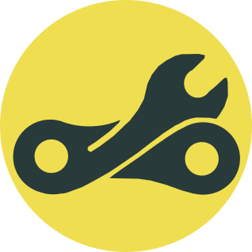

O mně
Po 8 letech vývoje softwarových řešení pro automotive R&D se naplno věnuji modernímu backend vývoji s přesahem do full-stacku.
Aktuálně navrhuji a vyvíjím vlastní platformu BikeCheck, od prvotního konceptu a návrhu produktu až po architekturu, vývoj a nasazení.
Baví mě učit se nové technologie a rovnou je zkoušet na vlastních projektech.
Hledám backend pozici, ale nebráním se ani práci na frontendu.
Dovednosti / Technologie
Node.js, TypeScript, NestJS, PostgreSQL, Prisma, BullMQ, Redis, REST API
React, Capacitor, VueJS, Docker, Git, Prometheus, Grafana, Hetzner Cloud
LLM Tooling (Function Calling), Vercel AI SDK, Gemini/Openai API
AI používám jako nástroj pro urychlení vývoje. Zároveň si zakládám na tom, abych kódu rozuměl a dokázal ho kriticky posoudit. Jednu z inspirací AI workflow používám přístup Matta Pococka a jeho důraz na dobře navržený, typově bezpečný a udržovatelný kód. Protože výsledek je vždy jen tak dobrý, jak dobré je zadání a následná kontrola.
Pracovní zkušenosti

Vývoj platformy BikeCheck – webová a mobilní aplikace pro správu a servis kol, sledování opotřebení komponent (řetězy, brzdy, odpružení) podle nájezdu dle dat ze Stravy a správu servisních intervalů, komponent atd. Možnost vytváření reportů a sdílených profilů. Určeno pro koncové uživatele i cykloservisy.
- Architektura & Backend: End-to-end návrh a implementace v TypeScriptu a NestJS. Relační modelování (PostgreSQL, Prisma), tvorba REST API a autentizace
- Mikroslužby & DevOps: Vývoj mikroslužby pro integraci platformy Strava. Řešení OAuth2 autentizace, webhooky se zpracováním na pozadí (BullMQ). Nasazení na Hetzner Cloud s observability stackem (Prometheus, Grafana, Loki)
- Frontend & mobilní aplikace: Vývoj responzivního rozhraní v Reactu a mobilní aplikace v Capacitoru včetně přípravy buildů pro Google Play a App Store
- Integrace LLM: Návrh AI asistenta s využitím (Function Calling) v NestJS
- Návrh komplexní architektury: Vytvářel jsem robustní aplikace (Labview, Python) s využitím pokročilých návrhových vzorů (např. stavové automaty) a paralelního zpracování, kde byla kritická stabilita běhu
- Automatizace a optimalizace procesů: Vyvinul jsem interní aplikaci pro kalibraci testovacích stanic (20+ denních uživatelů). Odstraněním manuálních kroků se proces zkrátil z několika dnů na jednotky hodin
- Kompletní softwarové řešení pro testování brzdových válců včetně analýzy dat a ukládání do databáze MySQL
- Vývoj měřících zařízení v CAD a programování v Labview
- Vývoj scriptů pro automatizaci do CAD Catia pro konstrukční tým a programování PLC jednoúčelových strojů.